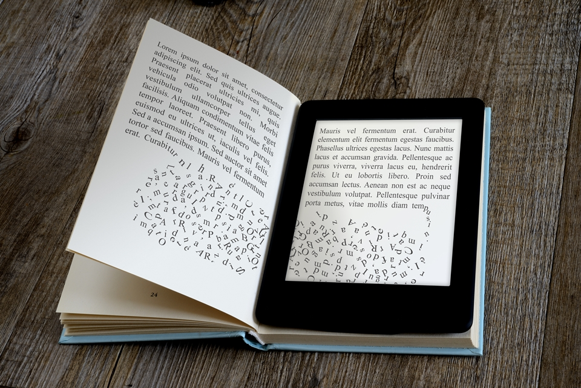
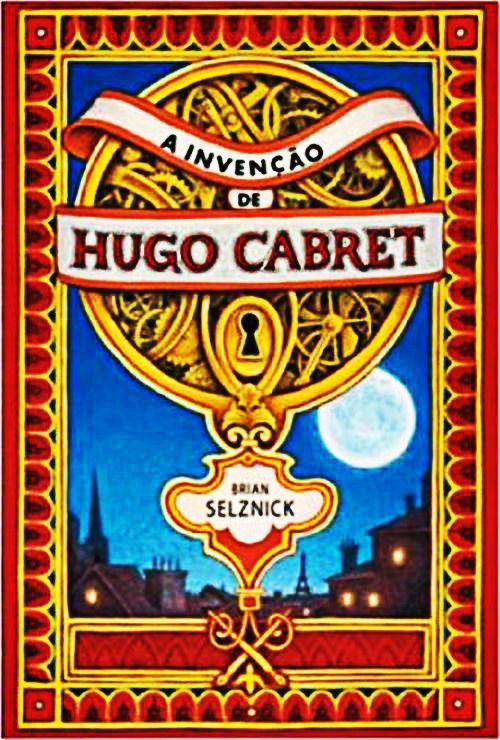
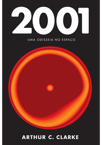
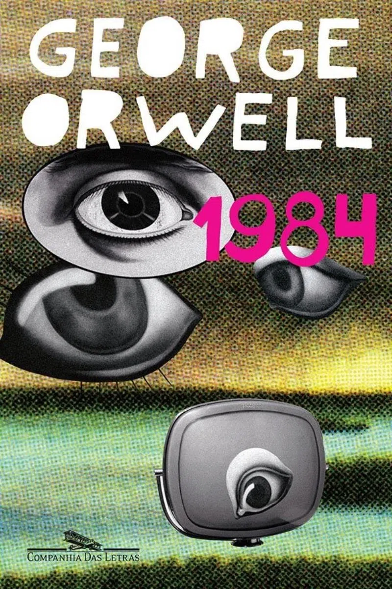

"Talidomida eletrônica"
A tecnologia está definitivamente presente na vida cotidiana. Seja para consultar informações, conversar com amigos e familiares ou apenas entreter, a internet e os celulares não saem das mãos e mentes das pessoas. Por esse motivo, especialistas alertam: o uso excessivo dessas ferramentas pode viciar.
Apesar de o distúrbio ainda não constar no Manual Diagnóstico e Estatístico de Transtornos Mentais, estudos recentes apontam que as mudanças causadas no cérebro pelo abuso na utilização da web são similares aos efeitos de drogas químicas, como o álcool e a cocaína. Fobia de perder o celular.
O problema, dizem os especialistas, é o usuário conseguir diferenciar a dependência do uso considerado normal. Hoje, a internet e os celulares são ferramentas profissionais e de estudo. De acordo com pesquisa realizada pelo Google no ano passado, 73% dos brasileiros que possuem smartphones não saem de casa sem eles. A advogada Nídia Aguilar, por exemplo, diz se sentir ansiosa e incomodada quando fica longe do celular, pois usa o aparelho para se comunicar com clientes. Apesar de estar ciente do uso excessivo, ela considera o telefone fundamental para o trabalho. — A linha que separa o uso do abuso é tênue. Mesmo que se use muito o celular, isso não caracteriza o vício. Na dependência patológica, o uso excessivo está ligado a um transtorno de ansiedade, como pânico ou fobia social — afirma a psicóloga Anna Lucia Spear King.
Assim como a Talidomida, o celular em nossa era promete trazer inúmeros benefícios, mas sesus efeitos colaterais devem com certeza serem considerados.
Benefícios da leitura no cérebro
Você já deve imaginar alguns dessas vantagens da leitura, pois muito se fala sobre elas. Para incentivar ainda mais a sua vontade de criar o hábito de ler, acompanhe as informações a seguir!
Melhora no vocabulário: Seja em um livro físico, seja pela internet, a leitura pode agregar bastante em seus conhecimentos. Além de entender mais sobre um determinado assunto, você ainda tem contato com formas diferentes de escrita — afinal, cada autor leva consigo suas próprias características, que se refletem nos conteúdos.
Logo, você pode conhecer novas palavras ou novos usos para alguns termos que não faziam parte do seu vocabulário. Sabe o que isso significa? Você conseguirá falar em público de uma maneira mais eloquente, sem que o uso de algumas frases pareça forçado. Em consequência, terá maior credibilidade e poderá até mesmo se tornar referência para outras pessoas. Ponto para sua capacidade de comunicação!
Aprimoramento da escrita: Um benefício da leitura que anda junto com a melhoria do vocabulário é o aprimoramento da escrita. Assim como a comunicação verbal, a capacidade de se expressar por meio de textos é ampliada a partir do momento em que você “desbloqueia” novas palavras. E tudo isso, é claro, pode ser conquistado com o hábito de ler.
Seus conteúdos ficarão ainda mais fluidos quando você aprende novos termos, pois é capaz de eliminar repetições e ser claro e coeso sem muitos esforços. Assim, é possível potencializar seu portfólio profissional, com publicações no LinkedIn, por exemplo, redigir documentos mais eficientes e ainda mandar bem nas redações dos vestibulares. Inclusive, se estiver nessa fase de estudos, não deixe de conferir a Trilha do Enem!
Estímulo da memória: Você já leu alguma notícia ou história que ficou guardada em sua memória? Isso é bastante comum e representa mais um dos benefícios da leitura. Com a prática, você vai ficando ainda mais especialista na arte de memorizar fatos, dados, datas e assim por diante.
Essa vantagem é potencializada quando você adquire o hábito de ler mais de um livro ao mesmo tempo. Assim, estimula a sua mente a lembrar em que parte parou a leitura, quais foram os últimos acontecimentos na narrativa, quem são os personagens, entre outros. Se achar muito complicado conciliar duas obras literárias, que tal incluir uma publicação sobre empreendedorismo ou de algum tema que desperta o seu interesse?
Capacidade de concentração: Para entender bem o que o texto ou o livro está dizendo, ter concentração é fundamental. A leitura dinâmica é uma boa aliada, principalmente quando você precisa finalizar dezenas de páginas em um curto período. Porém, nada substitui a calma e o foco nessa prática, pois esse estado torna a experiência ainda melhor. Pode reparar!
Expansão do conhecimento: Quando falamos em hábito de leitura, tenha em mente a importância da leitura de diferentes formatos e tamanhos de textos, pois faz toda a diferença — como já reforçamos neste artigo. Qualquer conhecimento pode ser útil (e até mesmo decisivo) em algum momento de sua trajetória pessoal e profissional.
Ao ler mensagens nas redes sociais, por exemplo, você desenvolve a empatia e aprende a dialogar melhor com diversas personalidades, o que favorece suas habilidades comportamentais (as chamadas soft skills). Por outro lado, um artigo científico auxilia a adquirir contato com uma área do saber e impulsiona suas competências técnicas (ou hard skills).
Crescimento profissional: Todo esse conhecimento adquirido tem um resultado certeiro: o seu crescimento profissional. Afinal, não é só de títulos e de listas de empregos no currículo que vive uma pessoa em busca da vaga ideal. O que você aprende é um complemento para o seu repertório, que pode muito bem ser percebido em uma entrevista, por exemplo.
Dessa forma, as vagas nas melhores empresas ou mesmo bolsas na faculdade podem ser conquistas suas — já sabe o que fazer, não é mesmo? Não deixe de lado o hábito da leitura!
Inteligência emocional: Sabia que, quando você lê, torna-se mais empático com outras pessoas ou situações do dia a dia? Afinal, toma contato com realidades distantes da sua, aprende com as experiências dos personagens (sejam eles reais, sejam eles fictícios) e, em consequência, fica mais tolerante para a diversidade.
Em outras palavras, investir na leitura é o mesmo que fortalecer a sua inteligência emocional. Afinal, diante dessas histórias, você passa a olhar para a própria vida com outros olhos — mais maduros, com certeza!
Como a leitura pode tornar você um profissional melhor? Com as tecnologias em constante movimento, não é só o mercado de trabalho que muda: até mesmo a convivência em sociedade sofre alterações. Nesse cenário, uma coisa é certa: vai longe quem não deixa de estudar, vai sempre em busca de novos conhecimentos e não se acomoda com pouco. Com todos os benefícios da leitura, já deu para perceber que ela é fundamental, não é mesmo?
Um profissional que mantém o hábito da leitura consegue “devorar” artigos e documentos com maior facilidade — a exemplo do que acontece com advogados. Sem falar na moral que têm diante dos colegas quando começam a discursar, pois suas técnicas de oratória foram aprimoradas durante os anos grudados nos livros.
Viu só como os benefícios da leitura vão muito além da vida pessoal? Se você nunca foi muito chegado aos livros, saiba que nunca é tarde para começar a apreciá-los! Para criar esse hábito, que tal estipular uma meta mensal e dar início hoje mesmo a essa prática?
Dicas para leitores iniciantes
Escolha livros de menor tamanho: ler e legal livrosSim, o número de páginas pode assustar – e muito! É bom, nessa fase, escolher um livro que não tenha tantas páginas. Ler é um efeito gradativo: no início lê-se pouco e vai-se aumentando lentamente, ou seja, com o tempo você aumentará gradativamente o número de páginas que lê.
Escolha uma boa história: É muito importante saber escolher qual livro ler, pois "todos gostam de ler, apenas não descobriram qual é o seu tipo preferido de leitura" (autor desconhecido). Um jeito fácil de escolher uma história é se conhecer: do que você gosta? Romance? Aventura? Escolha uma história baseada na sua personalidade e em seus gostos.
Peça recomendações e busque coisas novas: Para aprofundar seus conhecimentos e cultivar o gosto pela leitura, procure sempre algo novo e converse com alguém já experiente. Não tenha medo de experimentar nem de errar. É assim que você se descobre!
Caminhe e continue: Você vai descobrir que a leitura é um universo lindo cheio de aventuras e coisas novas a se descobrir. É um campo altamente vasto onde todos podem, de um jeito ou de outro, se encontrar. Um dia você terá autonomia e verá que valeu a pena todo o esforço!
Não se afobe! Leia no seu ritmo: Hoje a leitura virou maratona, e as pessoas leem desenfreadamente para ostentar: “ah, li 500 livros esse ano” Não faça isso! Leia no ritmo que te parecer agradável e normal. Não se apresse em chegar ao final da obra para ler outras (sei que as vezes o livro que estamos lendo não é tão bom, mas tente) evite estar contando quantas páginas falta para acabar a obra, simplesmente mergulhe na história e divirta-se. Se você tem o ritmo rápido, tudo bem, mas se não, não fique triste por que seu amigo leu 5 livros no mês e você apenas um, as pessoas são diferentes.
Leia por PRAZER! Só se destaca na vida que lê muito, e só lê muito quem lê por prazer, leia com paixão,como um hobby, pois logo crescerá e se tornará um estilo de vida ou atá mesmo uma paixão.
Kindle X Livro Físico
Vantagens de ler livros no Kindle:
Os livros para Kindle são consideravelmente mais baratos, sendo possível encontrar mesmo muitos livros gratuitos.
Pode ter sempre consigo milhares de livros: é possível armazenar entre 1400 a 3000 livros no seu Kindle, o que equivale a 2GB ou 4GB de memória, dependendo dos modelos.
Possibilidade de ler os livros utilizando o seu Kindle na vertical ou horizontal, podendo também aumentar a resolução para uma melhor visualização. O Kindle permite 8 tamanhos de letra, 3 tipos de letra diferentes, bem como a alteração do espaçamento entre linhas, podendo assim escolher a configuração que mais lhe agradar para facilitar a leitura.
Como é bastante mais leve que um livro tradicional, entre 170 a 220 gramas, é mais prático de transportar do que um livro normal.
Pode escolher o seu livro novo no conforto do seu sofá, através do seu computador ou diretamente no Kindle, e este fica disponível em segundos.
Como a entrega dos livros é feita via Internet, não são cobradas despesas de envio.
Permite a leitura de outros documentos, desde que convertidos para o formato Kindle (esta conversão é realizada automaticamente, enviando o documento para um email associado ao seu Kindle).
Pode ler o seu livro em qualquer lugar, que ninguém fica a saber o que está a ler, uma vez que não irão conseguir ver a capa do seu livro(s).
Poderá adicionar anotações ao seu livro sem o danificar.
O Kindle memoriza automaticamente a última página que esteve a ler, por isso, não tem de se preocupar em marcá-la.
Tal como todos os aparelhos eletrónicos, o Kindle necessita de ser carregado, mas a sua bateria consegue durar um a dois meses, dependendo da utilização e do modelo em causa.
Desvantagens de se ler em um Kindle
É necessário fazer o investimento inicial da compra do Kindle e os modelos mais recentes já têm um preço considerável. Em média, só irá ver o seu investimento rentável a partir do 10º livro, o que torna estes gadgets mais indicados para pessoas que têm um forte hábito de leitura.
Ao comprar o seu Kindle ele não vem acompanhado de carregador, apenas com um cabo USB para o ligar ao seu computador: esta é a única forma de carregar o Kindle.
A bateria do Kindle demora cerca de 3 horas a carregar.
Só pode comprar livros na Amazon.
Ainda não existem muitos livros em português para o Kindle e os que existem não são novidades. Não pode emprestar os livros a ninguém, a não ser claro, que empreste o seu Kindle!
Conclusão: Nem tudo são vantagens ou desvantagens, são apenas características exatamente pensadas para igualar estas duas formas de leitura. Como, por exemplo, a tecnologia e-ink utilizada nos ecrãs do Kindle – esta tecnologia pretende igualar as folhas de papel, ou seja, apesar de mostrar um ecrã a preto e branco, não tem luz de fundo e desta forma não cansa os olhos e não reflete luz como outros aparelhos, o que permite uma leitura perfeita, mesmo num dia com muita claridade… mas, não dá para ler no escuro.
Pondere todas as vantagens e desvantagens de ler livros no Kindle e decida de que forma pretende realizar as suas leituras no futuro. Cada leitor é um leitor e o que se adequa mais a uns pode não ser o adequado para nós. Se conhece alguém que tenha um Kindle, peça-o emprestado durante um fim-de-semana e teste-o na prática. Independentemente da sua decisão: boas leituras!
Recomendações para leitores iniciantes
Deltora Quest: Deltora Quest é uma série de livros divididos em três partes, escrito pela australiana Emily Rodda que narra as aventuras de três companheiros, Lief, Barda e Jasmine, com o intuito de ajudar o reino de Deltora a acabar com o sofrimento e devastação causados pelo terrível Senhor das Sombras.
Quando as pedras são roubadas e escondidas em locais sombrios e terríveis em todo o reino, o Senhor das Sombras triunfa e Deltora está perdida.
Em segredo, com apenas um mapa desenhado à mão para guiá-los, dois estranhos companheiros, Lief e Barda saem numa perigosa busca, para encontrar as sete pedras preciosas do mágico Cinturão de Deltora. Determinados a encontrar as pedras perdidas e livrar seu país do tirano, eles lutam para enfrentar os muitos perigos imagináveis que aguardam nas misteriosas Florestas do Silêncio.
A invenção de Hugo Cabret: Hugo Cabret é um menino órfão que vive escondido na central de trem de Paris dos anos 1930. Esgueirando-se por passagens secretas, Hugo cuida dos gigantescos relógios do lugar - escuta seus compassos, observa os enormes ponteiros e responsabiliza-se pelo funcionamento das máquinas. A sobrevivência de Hugo depende do anonimato - ele tenta se manter invisível porque guarda um incrível segredo, que é posto em risco quando o severo dono da loja de brinquedos da estação e sua afilhada cruzam o caminho do garoto. Um desenho enigmático, um caderno valioso, uma chave roubada e um homem mecânico estão no centro desta história, que, narrada por texto e imagens, procura misturar elementos dos quadrinhos e do cinema.
Essa obra-prima aclamada pela crítica mundial mistura elementos do cinema e dos quadrinhos para contar uma história sobre os primórdios do cinema, a vontade de criar vida e a aventura da imaginação.
O medo e a ternura: A jovem Esmeralda é confundida com a filha de um milionário e levada por seus sequestradores para uma igreja abandonada, à espera de um resgate que nunca será pago! O que acontecerá com ela nas garras de três monstruosos sequestradores e vigiada pelo corcunda a quem chamam de Bicho Preto? O suspense e a tensão que você já conhece em outras obras de Pedro Bandeira estão mais impressionantes do que nunca neste romance de horrorizar, mas, principalmente, de enternecer.
Recomendações de livros de ficção científica
2001. Uma Odisseia No Espaço: A raça humana está numa era de ouro da exploração espacial, tendo montado estações espaciais e bases na Lua. há uma intensa especulação sobre a existência ou não de vida fora da Terra, que aumenta ainda mais com a descoberta de algo que mudaria para sempre a visão do cosmos: um monólito enterrado em uma cratera lunar.

1984: Publicada originalmente em 1949, a distopia futurista 1984 é um dos romances mais influentes do século XX, um inquestionável clássico moderno. Lançada poucos meses antes da morte do autor, é uma obra magistral que ainda se impõe como uma poderosa reflexão ficcional sobre a essência nefasta de qualquer forma de poder totalitário.
Winston, herói de 1984, último romance de George Orwell, vive aprisionado na engrenagem totalitária de uma sociedade completamente dominada pelo Estado, onde tudo é feito coletivamente, mas cada qual vive sozinho. Ninguém escapa à vigilância do Grande Irmão, a mais famosa personificação literária de um poder cínico e cruel ao infinito, além de vazio de sentido histórico.

Fim da Infância: Nos primeiros anos da Guerra Fria, uma raça tecnologicamente superior ao homem desce dos céus para governar a Terra.
Ao contrário do que se poderia imaginar, os invasores se mostram benevolentes e acabam conduzindo o planeta a um período de prosperidade jamais visto, em que não mais existem violência, fome e doenças. Com poucos focos de resistência, a humanidade se rende ao invasor.
Mas os Senhores Supremos têm suas regras: não é permitido a ninguém os conhecer, e a exploração do espaço está terminantemente proibida aos homens. Entre revelações surpreendentes e um vago mal-estar que assombra os corações humanos, o real propósito dos novos líderes permanecerá oculto por duzentos anos. Até que a humanidade esteja pronta. Até que uma missão seja cumprida. Até que a raça humana conheça o destino que lhe foi traçado.
Recomendações de livros de fantasia

Ordem vermelha. Filhos da degradação: Seis grandes deuses criaram o mundo, a humanidade e além dela outras cinco raças: os Anões, os Kaorshs, os Gnolls, os Gigantes e os Sinfos. No plano terreno cada raça possuía seus próprios dons e papéis, porém, os humanos, incitando a discórdia e a inveja entre as raças, iniciaram uma guerra entre espécies, o que muito desagradou aos deuses. Enfurecidos com a ingratidão de suas criaturas, os seis deuses puniram severamente cada uma das espécies e reduziu o mundo a um grande deserto, onde só um pequeno pedaço de terra continuaria a ser habitável. Esse deserto era a Degradação, e a última terra seria chamada de Untherak.
Por fim, como para completar o castigo divino, os seis se tornaram uma, Una, que instauraria um governo tirânico e escravocrata sobre as raças sobreviventes reunidas em Untherak. Mas em si, a Deusa carregava consigo um grande segredo que ameaçaria seu governo milenar. De posse desse segredo e guiados por um misterioso guerreiro de capa vermelha, a cor proibida por Una, um pequeno e inesperado grupo insurgente tenta derrubar o regime imposto e na busca por liberdade levar a todos a verdade sobre a deusa. Em consequência desse ato insurgente é aceso o estopim para uma aventura de dimensões épicas.

O Hobbit: Bilbo Bolseiro era um dos mais respeitáveis hobbits de todo o Condado até que, um dia, o mago Gandalf bate à sua porta. A partir de então, toda sua vida pacata e campestre soprando anéis de fumaça com seu belo cachimbo começa a mudar.
Ele é convocado a participar de uma aventura por ninguém menos do que Thorin Escudo-de-Carvalho, um príncipe do poderoso povo dos Anãos. Essa jornada fará Bilbo, Gandalf e 13 anãos atravessarem a Terra-média, passando por inúmeros perigos, sejam eles, os imensos trols, as Montanhas Nevoentas infestadas de gobelins ou a muito antiga e misteriosa Trevamata, até chegarem (se conseguirem) na Montanha Solitária. Lá está um incalculável tesouro, mas há um porém. Deitado em cima dele está Smaug, o Dourado, um dragão malicioso que... bem, você terá que ler e descobrir.
Lançado em 1937, O Hobbit é um divisor de águas na literatura fantástica mundial. Mais de 80 anos após a sua publicação, o livro que antecede os ocorridos em O Senhor dos Anéis continua arrebatando fãs de todas as idades, talvez pelo seu tom brincalhão com uma pitada de magia élfica, ou talvez porque J.R.R. Tolkien tenha escrito o melhor livro infanto-juvenil de todos os tempos.

As Crônicas de Nárnia: Viagens ao fim do mundo, criaturas fantásticas e batalhas épicas entre o bem e o mal - o que mais um leitor poderia querer de um livro? 'As crônicas de Nárnia' transcenderam o gênero da fantasia para se tornar parte do cânone da literatura clássica. Por mais de sessenta anos, milhões de leitores de todo o mundo se encantam com a história mágica de C. S. Lewis sobre um mundo onde o inverno é eterno, onde há mais animais falantes do que seres humanos e onde centauros, gigantes e faunos lutam entre si.
À primeira vista simples, os eventos descritos na prosa imortal de C. S. Lewis continuam cativando os leitores com aventuras, personagens e fatos que falam a pessoas de todas as idades.
"Como Tolkien, C.S. Lewis redefiniu a natureza da fantasia, acrescentando riqueza, beleza e dimensão...Nos nossos tempos, todo reino de fantasia deve ser avaliado em comparação com Nárnia." (Lloyd Alexander)
Recomendações de livros de terror

Drácula: Drácula é uma obra-prima única do terror e a mais famosa de todas as histórias de vampiros. Uma verdadeira obra-prima, Drácula transcendeu gerações, linguagem e cultura para tornar-se um dos romances mais populares alguma vez escritos. É por excelência uma história de suspense e horror, que ostenta um dos personagens mais terríveis que já nasceram na literatura: o conde Drácula, um espectro trágico e noturno que se alimenta do sangue dos vivos, e cujas paixões diabólicas depredam os inocentes, os desamparados, e os belos.
Mas Drácula também se destaca como uma saga alegórica de um ser eternamente amaldiçoado cujas atrocidades noturnas refletem o lado sombrio da era extremamente moralista em que foi originalmente escrito - e os desejos corruptos que continuam a atormentar a condição humana moderna.Abraham «Bram» Stoker (8 de novembro de 1847 - 20 de abril de 1912) foi um romancista e contista irlandês.

O Chamado de Cthulu: Lovercraft é, sem sombra de dúvidas, um dos melhores escritores do século XX.Seu talento, embora tivesse sido impedido de ter seu reconhecimento por parte do público de sua época devido à aversão que próprio Lovercraft tinha em relação à escrita comercial, teve uma enorme contribuição para a definição da literatura norte-americana, bem como para o gênero de ficção científica, que, no universo desse fantástico do escritor, é combinado ao terror psicológico, a nova roupagem dada ao gênero pelo também célebre Edgar Allan Poe.
"The Call of Cthulhu" é considerado o auge da escrita lovercraftiana e compõe a complexa mitologia criada junto com outros escritores que reconheceram e tornaram-se tanto admiradores quanto participantes da construção desse universo.O medo provocado nos homens pelo horrendo e poderoso deus Cthulhu é o motor do conto que dá título a este livro, composto também por outros contos igualmente envolventes e que "puxam" o leitor para dentro das histórias, fazendo-os, até certo ponto, sentirem-se personagens principais.

O Menino que Desenhava Monstros: Jack Peter é um garoto de 10 anos com síndrome de Asperger que quase se afogou no mar três anos antes. Desde então, ele só sai de casa para ir ao médico. Jack está convencido de que há de monstros embaixo de sua cama e à espreita em cada canto. Certo dia, acaba agredindo a mãe sem querer, ao achar que ela era um dos monstros que habitavam seus sonhos.
Ela, por sua vez, sente cada vez mais medo do filho e tenta buscar ajuda, mas o marido acha que é só uma fase e que isso tudo vai passar. Não demora muito até que o pai de Jack também comece a ver coisas estranhas. Uma aparição que surge onde quer que ele olhe. Sua esposa passa a ouvir sons que vêm do oceano e parecem forçar a entrada de sua casa.
Enquanto as pessoas ao redor de Jack são assombradas pelo que acham que estão vendo, os monstros que Jack desenha em seu caderno começam a se tornar reais e podem estar relacionados a grandes tragédias que ocorreram na região. Padres são chamados, histórias são contadas, janelas batem. E os monstros parecem se aproximar cada vez mais.
Como estudar

É comum vermos os jovens estudantes do ensino médio tentando fugir de estudar em casa, mas é importante que eles tenham em mente a importância do estudo diário e não só na véspera da prova. O estudo em casa deve ser uma tarefa contínua, porque o conteúdo programático dessa fase da educação é muito extenso e por muitas vezes podem existir dificuldades de aprendizado ou de fixação e memorização.
Para combater este mal, tantas vezes corriqueiro no dia a dia dos adolescentes, é preciso que eles façam a experiência de estudar diariamente por, pelo menos, um mês e verificar se o “sacrifício” compensa ou não. Com empenho vai ser fácil perceber o quanto estudar será fácil, as aulas se tornarão mais interessantes e as provas serão feitas como se fossem exercícios da tarefa de casa.
Como Começar: Primeiramente, coloque como meta o ato de não estudar só na véspera da prova e jamais utilizar o período da madrugada para estudar. Além de não haver concentração suficiente nesta hora, o aluno fica com sono e não presta atenção na aula do dia seguinte. O ideal é criar um programa de estudos que acompanhe as suas aulas no colégio. Por exemplo, se durante a manhã você tem aula de Português, História, Geografia e Física então reserve quatro horas do seu dia para revisar o conteúdo dado em sala de aula e resolver exercícios (a única forma de se treinar as disciplinas exatas é resolvendo exercícios).
Mas, atenção! Quatro horas é um tempo suficiente para se dedicar ao estudo em casa (sem contar o tempo que fica na escola), mas se você precisar ficar um pouco mais de tempo para estudar para uma prova, por exemplo, não se esqueça de jamais ultrapassar cinco horas, sob pena de o seu esforço ser em vão. Afinal, o seu cérebro também precisa descansar e depois de certo tempo entra em sobrecarga e o conteúdo literalmente “se esparrama” da sua cabeça, não fica nada. Portanto, sem exageros!
O estudo diário ajuda a prevenir os desesperos de véspera de prova, já que estudando só no último dia você vai adquirir dúvidas que não poderão ser sanadas pelo professor. Mas, se você está com o conteúdo em dia e resolver dar uma revisada um pouco antes da prova, cuidado! As informações lidas por você nesse período poderão criar falsas associações e destruir o trabalho de um mês inteiro! Nesse tempo o melhor é relaxar, manter uma respiração calma e esvaziar a mente para que o conteúdo pedido nas questões flua naturalmente.